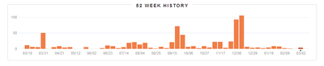
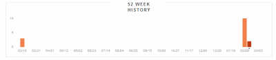

Data Visualization in the Browser
Rob Larsen
DATE
What we're going to talk about
- Quickly: About me
- High Level: Data Viz, SVG, Canvas
- Hands-On: Core APIs, Raphael, D3, Highcharts, Processing, and More
Me
Rob Larsen
Work
- Making web sites since 1997
- HTML + CSS + JavaScript as my day job since 1999
- Then: agency guy/consultant-- big brands all day (Adidas, Motorola, Samsung, etc.)
- Now: I come with with 100% more suits.
Seriously, suits
More Work
- Open source: H5BP Ant Build Script, CanvasJS and more. I'm roblarsen on Github
- @robreact on Twitter & blog @ HTMLCSSJavaScript.com and I plea for help from the smart people in my F2E circle on Google Plus (http://dfst.us/gplus)
- I wrote this book. It just came out.
My Own Experience With These Technologies
Front end project lead on multiple sites and apps that have used both SVG and Canvas to interesting (and sometimes hair-pulling effect.) I'm a fan of these technologies and a consumer of these libraries with just enough knowledge of how they work to be dangerous.
Art
Data Visualization
 Rhymes with crufty? Photo from Andreas_MB on Flickr
Rhymes with crufty? Photo from Andreas_MB on Flickr
Basically
Taking this
{"username": "rob_react", "weeks": {"1152446400": {"Pink": 2, "The Decemberists": 3, "Jerry Jeff Walker": 7, "The Clash": 2, "Jim Carroll Band": 2, "Big Audio Dynamite II": 1, "The Beatles": 12, "Cheap Trick": 1, "Rod Stewart": 3, "Ninja Tunes": 1, "Nas": 1, "Boogie Down Productions": 1, "Everclear": 8, "DANGERDOOM": 2, "Paul Simon": 1, "Macy Gray": 1, "Jem": 1, "Terror Danjah Ft. Riko, Bruza, D Double E And Hyper": 1, "Kelly Willis": 1, "Herman's Hermits": 1, "Tool": 1, "Sound Tracks": 1, "The Cure": 1, "Belle and Sebastian": 9, "Tom Waits": 2, "Nick Drake": 1, "Jammer Ft. Wiley, D Double E, Kano and Goodz": 2, "Oasis": 4, "Acid House Kings": 2, "Ralph Stanley & Friends": 1, "Joe Jackson": 1, "The Libertines": 7, "Wilco": 1, "Sublime": 5, "The Cardigans": 1, "Bill Hicks": 3, "Harry Nilsson": 1, "Operation Ivy": 1, "Bob Dylan": 11, "Joni Mitchell": 1, "Led Zeppelin": 1, "50 Cent": 1, "Black Crowes & Wilco": 1, "Kano": 1, "Mason Jennings": 7, "Dave Matthews Band": 1, "The White Stripes": 1, "Michael Penn": 4, "Ralph Stanley": 1, "Kirsty MacColl / The Pogues": 1, "Billy Bragg & Wilco": 2, "Misfits": 3, "The Pretenders": 2, "The Pogues": 12, "Sangue Misto": 1, "Rufus": 1, "The Beach Boys": 2, "Marvin Gaye": 2, "The Strokes": 3, "The Streets": 5, "The Stanley Brothers": 5, "Franz Ferdinand": 1, "Dave Matthews": 1, "My Morning Jacket": 1And turning it into this
The Technologies
Scalable Vector Graphics (SVG)
It just rolls off the tongue.
SVG has had a long and strange journey to the world of 'emerging technologies.' SVG was actually defined in 1999, so it’s not exactly the new kid on the block.
Still, it took a long while to catch on, so you can't really blame people for lumping it in with "HTML5 and Friends."
SVG is a vector graphics grammar defined as XML.
When created in the context of a document SVG elements are also DOM elements. That means properties are stored as part of the regular DOM and access to individual elements is available using traditional DOM access methods like document.geElementById and document.getElementsByTagName.
It can also be styled with CSS.
SVG can also be output from a vector based drawing program and used as the src of an <img> element or as the background of an element as defined by CSS.
Vector means: it scales!
It looks like this
Viewing Source
<svg width="200" height="200"
viewPort="0 0 200 200" version="1.1"
xmlns="http://www.w3.org/2000/svg">
<circle cx="100" cy="100" r="75" fill="#fe57a1"/>
</svg>
It can also look like this

Viewing Source
<img src="img/circle.svg">
Support
data from caniuse.comCanvas
The canvas element and associated API started life as an Apple extension to HTML. From there it blossomed into one of the early stars of the HTML5 era.
The canvas element provides a scriptable interface for drawing two-dimensional images in the browser. Think... dynamic PNGs. Even without full browser support on the desktop, developers have embraced canvas fully.
It's an extremely low level API. This means you can sometimes do more work but you have complete, pixel level control. It's been used for everything from high traffic visualizations to game engines, a popular system for delivering custom fonts, and a port of the Processing programming language into JavaScript.
It looks like this
Viewing Source
<canvas id="circle" width="800" height="300"></canvas>
var ctx = document.getElementById("circle").getContext("2d");
ctx.beginPath();
ctx.arc(400, 150, 75, 0, Math.PI*2, true);
ctx.fillStyle = "#fe57a1";
ctx.closePath();
ctx.fill();
Did I say low level?
arc is all you need when you have Math.PI*2 :)
ctx.arc(400, 150, 75, 0, Math.PI*2, true);
Support
data from caniuse.comComparing Canvas and SVG
High Level
Generally... Go SVG when dealing with a limited number of elements, there's interactivity required and the animation requirements aren't too high. It's more familiar to the average front end engineer and it's much easier to implement in an accessible way. Canvas is better for applications that require better animation, real-time interaction and/or many more elements. SVG elements are DOM elements so thousands of them is kind of scary. Thousands of "elements" in the canvas is still just the one element being manipulated. Of course, things can bog down with Canvas too.
Scaling matters
If different resolutions and form factors are the kind of thing that keeps you ip and night, make nice with SVG. SVG is like a miracle cure for what ails you.
Your Mileage May Vary
Since I don't have all day to go into the details of this nuanced issue, check out these two articles which cover this question in depth:
In Practice
SVG: Highcharts
Highcharts is a charting library written in pure JavaScript, offering intuitive, interactive charts to your web site or web application. Highcharts currently supports line, spline, area, areaspline, column, bar, pie, scatter, angular gauges, arearange, areasplinerange, columnrange and polar chart types.
SVG: Highstock
Highstock lets you create stock or general timeline charts in pure JavaScript, including sophisticated navigation options like a small navigator series, preset date ranges, date picker, scrolling and panning.
Commercial products, but... awesome.
- Pluses:
- Super powerful
- Well Documented
- Old IE support via VML
- Minuses:
- Not free
Viewing Source
var seriesOptions = [],
yAxisOptions = [],
seriesCounter = 0,
names = ['AAPL', 'BBRY'],
colors = Highcharts.getOptions().colors;
$.each(names, function(i, name) {
$.getJSON('../data/'+names[i].toLowerCase()+'.json', function(data) {
for (var j = 0, len = data.length; j < len; j++) {
data[j][0] = Date.parse( data[j][0] ).getTime();
}
data = data.reverse();
seriesOptions[i] = {
name: name,
data: data
};
seriesCounter++;
if (seriesCounter == names.length) {
createChart( seriesOptions );
}
});
});
function createChart(seriesOptions){
var chart = new Highcharts.StockChart({
chart: {
renderTo: 'chart'
},
yAxis: {
labels: {
formatter: function() {
return (this.value > 0 ? '+' : '') + this.value + '%';
}
},
plotLines: [{
value: 0,
width: 2,
color: 'silver'
}]
},
plotOptions: {
series: {
compare: 'percent'
}
},
tooltip: {
pointFormat: '{series.name}: {point.y} ({point.change}%)
',
valueDecimals: 2
},
series: seriesOptions
});
}
SVG: D3
D3.js is a JavaScript library for manipulating documents based on data. D3 helps you bring data to life using HTML, SVG and CSS. D3’s emphasis on web standards gives you the full capabilities of modern browsers without tying yourself to a proprietary framework, combining powerful visualization components and a data-driven approach to DOM manipulation.
- Pluses:
- Super powerful
- Under active development
 - Many examples
- Minuses:
- No support for old IE
View Source
var chord = d3.layout.chord()
.padding(.05)
.sortSubgroups(d3.descending)
.matrix(matrix);
var width = 900,
height = 500,
innerRadius = Math.min(width, height) * .35,
outerRadius = innerRadius * 1.1;
var fill = d3.scale.ordinal()
.domain(d3.range(4))
.range(["#336699", "#99ccff", "#6699cc", "#0066cc"]);
var svg = d3.select("body").append("svg")
.attr("width", width)
.attr("height", height)
.append("g")
.attr("transform", "translate(" + width / 2 + "," + height / 2 + ")");
svg.append("g").selectAll("path")
.data(chord.groups)
.enter().append("path")
.style("fill", function(d) { return fill(d.index); })
.style("stroke", function(d) { return fill(d.index); })
.attr("d", d3.svg.arc().innerRadius(innerRadius).outerRadius(outerRadius))
.on("mouseover", fade(.1))
.on("mouseout", fade(1));
var ticks = svg.append("g").selectAll("g")
.data(chord.groups)
.enter().append("g").selectAll("g")
.data(groupTicks)
.enter().append("g")
.attr("transform", function(d) {
return "rotate(" + (d.angle * 180 / Math.PI - 90) + ")"
+ "translate(" + outerRadius + ",0)";
});
ticks.append("line")
.attr("x1", 1)
.attr("y1", 0)
.attr("x2", 5)
.attr("y2", 0)
.style("stroke", "#000");
ticks.append("text")
.attr("x", 8)
.attr("dy", ".35em")
.attr("transform", function(d) { return d.angle > Math.PI ? "rotate(180)translate(-16)" : null; })
.style("text-anchor", function(d) { return d.angle > Math.PI ? "end" : null; })
.text(function(d) { return d.label; });
svg.append("g")
.attr("class", "chord")
.selectAll("path")
.data(chord.chords)
.enter().append("path")
.attr("d", d3.svg.chord().radius(innerRadius))
.style("fill", function(d) { return fill(d.target.index); })
.style("opacity", 1);
var arc = d3.svg.arc()
.innerRadius(innerRadius )
.outerRadius(outerRadius);
var g = svg.selectAll("g.group")
.data(chord.groups)
.enter().append("svg:g")
.attr("class", "group")
.on("mouseover", fade(.02))
.on("mouseout", fade(.80));
g.append("svg:path")
.style("stroke", function(d) { return fill(d.index); })
.style("fill", function(d) { return fill(d.index); })
.attr("d", arc);
g.append("svg:text")
.each(function(d) { d.angle = (d.startAngle + d.endAngle) / 2; })
.attr("dy", ".35em")
.attr("text-anchor", function(d) { return d.angle > Math.PI ? "end" : null; })
.attr("transform", function(d) {
return "rotate(" + (d.angle * 180 / Math.PI - 90) + ")"
+ "translate(" + (innerRadius + 26) + ")"
+ (d.angle > Math.PI ? "rotate(180)" : "");
})
.text(function(d) { return names[d.index]; });
function groupTicks(d) {
var k = (d.endAngle - d.startAngle) / d.value;
return d3.range(0, d.value, 1000).map(function(v, i) {
return {
angle: v * k + d.startAngle,
label: i % 5 ? null : v / 1000 + "k"
};
});
}
// Returns an event handler for fading a given chord group.
function fade(opacity) {
return function(g, i) {
svg.selectAll(".chord path")
.filter(function(d) { return d.source.index != i && d.target.index != i; })
.transition()
.style("opacity", opacity);
};
}
SVG: Raphaël
Raphaël is a small JavaScript library that should simplify your work with vector graphics on the web. If you want to create your own specific chart or image crop and rotate widget, for example, you can achieve it simply and easily with this library.
- Pluses:
- Fun, intuitive API
- built-in OLD IE support
- Lower Level API
- Minuses:
- Lower Level API
- Hopefully not dead, just resting:

View Source
var paper = Raphael(0, 0, 900, 550);
var alpe = paper.path("M71.5,538.641l29.937-15.665l30.633-14.271l30.981-16.014 l31.329-14.968l30.633-12.88l30.981-10.791l29.937-10.443l32.026-12.184l29.936-11.835l30.285-11.488l30.633-10.442l30.981-12.88 l29.937-11.488l30.633-13.924l30.285-10.792L562.672,335l29.937-11.835l31.329-9.747l29.937-12.88l32.374-11.487l30.285-12.879 l30.285-11.835l29.938-12.184l29.937-11.836l31.678-10.095L868.307,225h13.576 L886,538 L71.5,538")
.attr('fill','url(../slides/img/alpe.jpg)');
function climb( name, time, hex, endpos){
var rider = paper.text(10, 10, name)
.attr("fill", hex)
.attr("font-size", "14px");
rider.animateAlong({
path: "M71.5,538.641l29.937-15.665l30.633-14.271l30.981-16.014 l31.329-14.968l30.633-12.88l30.981-10.791l29.937-10.443l32.026-12.184l29.936-11.835l30.285-11.488l30.633-10.442l30.981-12.88 l29.937-11.488l30.633-13.924l30.285-10.792L562.672,335l29.937-11.835l31.329-9.747l29.937-12.88l32.374-11.487l30.285-12.879 l30.285-11.835l29.938-12.184l29.937-11.836l31.678-10.095L868.307,225h13.576",
rotate: false,
duration: time,
easing: 'ease-out',
debug: false
},function(){ rider.animate({x:endpos.x,y:endpos.y}, 1000)
});
}
climb("Pantani 1997 37.35", 3735, "#06c", {x:100,y:30});
climb("Lance 2004 37.36", 3736, "#cc0", {x:100,y:60});
climb("Sastre 2008 39.31", 3931, "#c00", {x:100,y:90});
climb("Sanchez 2011 41.21", 4121, "#c00", {x:100,y:120});
climb("Coppi 1952 45.22", 4522, "#06c", {x:100,y:150});
climb("The Badger 1986 48.00", 4800, "#000", {x:100,y:180});
SVG: Other Libraries
Canvas: Core Canvas
This specification defines the 2D Context, Level 2 for the HTML canvas element. The 2D Context provides objects, methods, and properties to draw and manipulate graphics on a canvas drawing surface.
- Pluses:
- Not a library
- So. Much. Power
- Minuses:
- Lower level API
View Source
function draw(data) {
ctx.fillRect(0,0,900,300);
var len = data.length,
width = 900/len,
gradient;
gradient = ctx.createLinearGradient(0, 0, 0, 300);
gradient.addColorStop(".5", "#003366");
gradient.addColorStop("1.0", "#ccff00");
ctx.fillStyle = gradient;
for (var i=0; i<len; i++) {
ctx.fillRect(i,300,width,-data[i]);
}
}
Canvas: Canvas.JS
CanvasJS is a small helper library for the canvas 2d API. The goal is to extend and enhance the basic API while still remaining familiarI'm partially to blame
- Pluses:
- Familiar API
- Tiny (4k gzipped)
- It's got a really nice personality
- Chaining
- Minuses:
- Lower level API
View Source
function draw(data) {
ctx.reset();
var len = data.length,
width = 900/len,
fill;
for (var i=0; i<len; i = i + 10) {
var dataLen = data[i];
for (var j = 0; j < dataLen; j = j+10){
fill = "rgb("+j+","+(255-j)+",255)";
ctx.fillCircle({
x : i,
y : 300 - j,
radius : 4,
fillStyle : fill
});
}
}
}
Canvas: JavaSCript InfoVis Toolkit
The JavaScript InfoVis Toolkit provides tools for creating Interactive Data Visualizations for the Web.